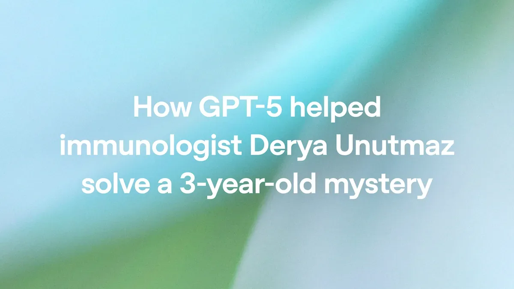
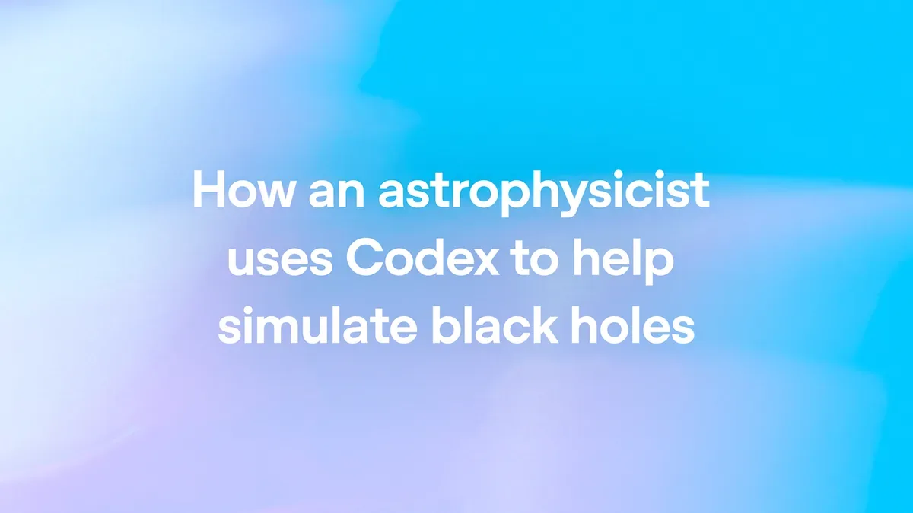
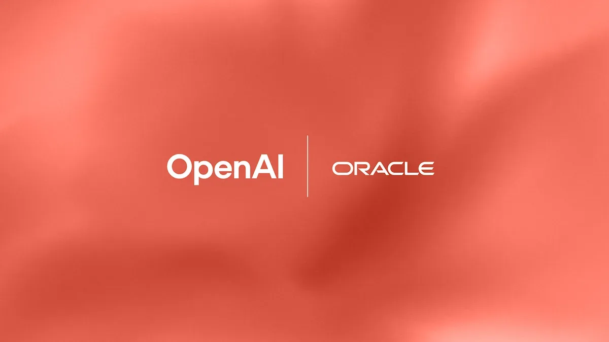
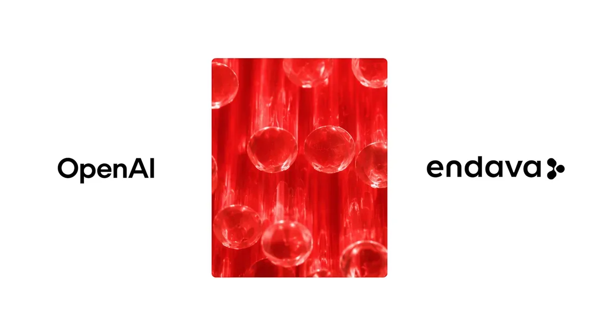
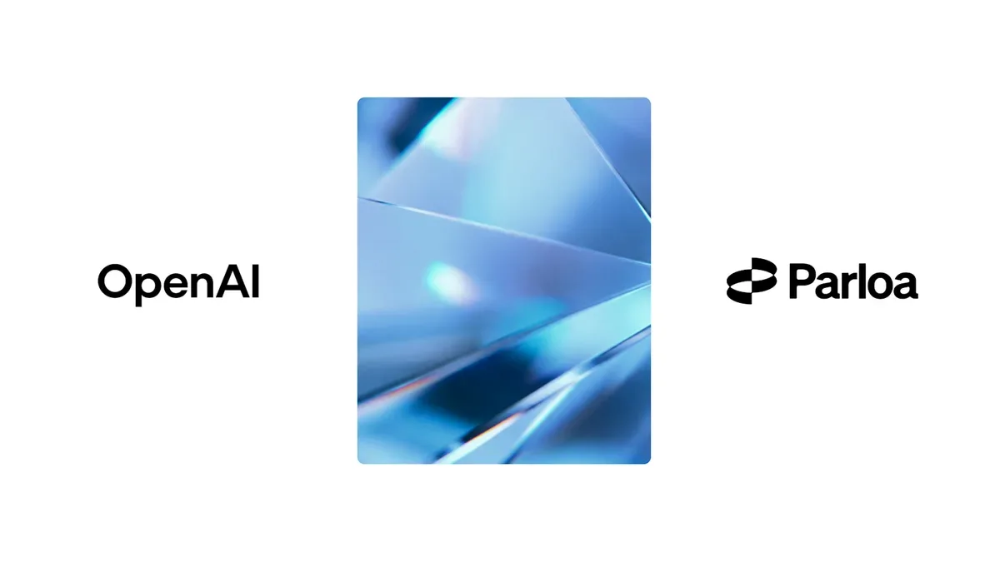
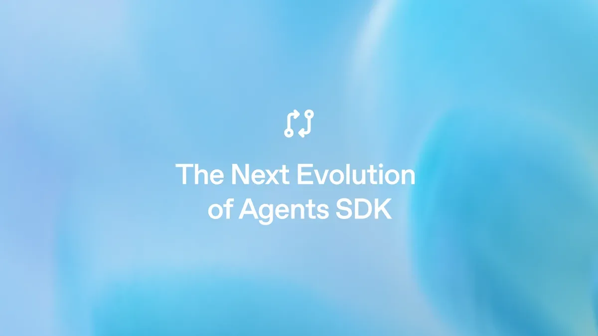
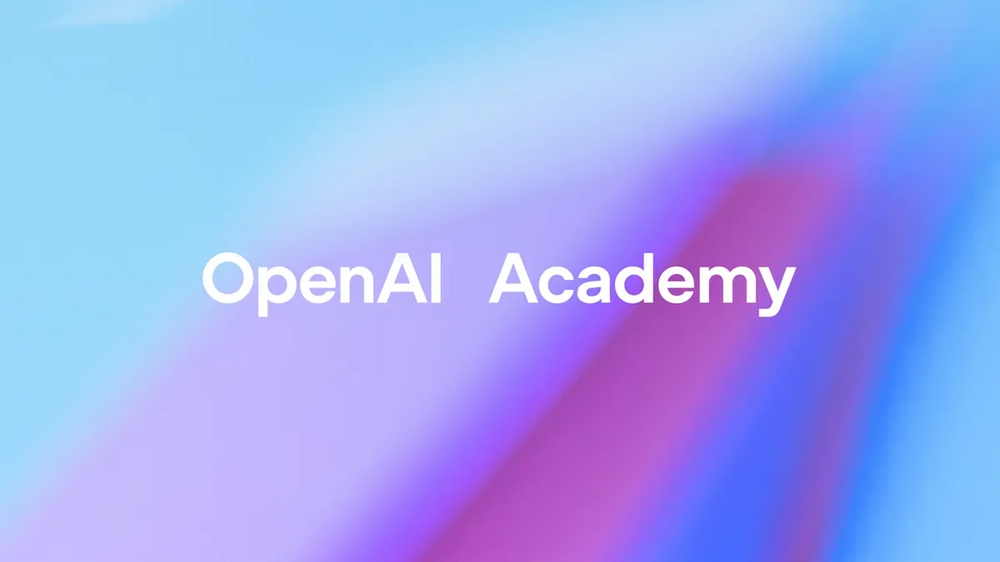
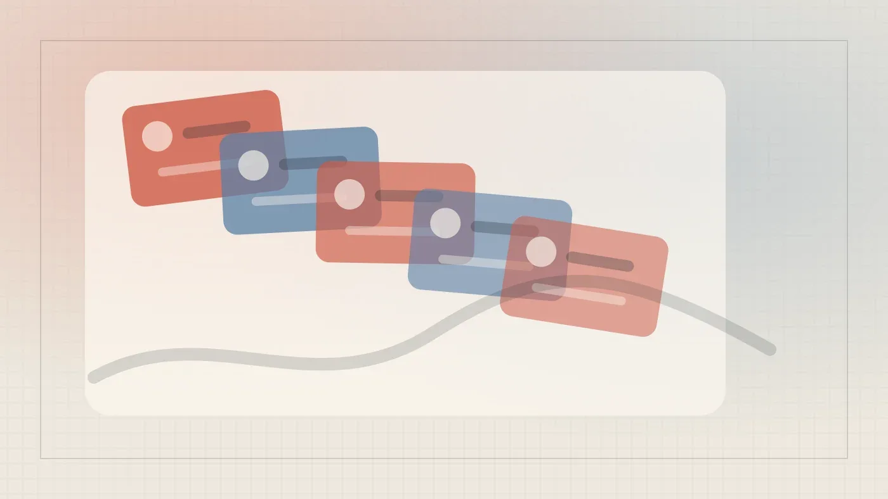

Лаборатории
GPT-5 Pro помогла иммунологу решить трёхлетнюю загадку Т-клеток
Как GPT‑5 Pro помогла иммунологу найти объяснение трёхлетнему научному парадоксу
OpenAI News
23 июн. 2026 г.Материалы из источника OpenAI News.
24 материалов

Как GPT‑5 Pro помогла иммунологу найти объяснение трёхлетнему научному парадоксу

Samsung Electronics развертывает ChatGPT и Codex для всех сотрудников — крупнейшее корпоративное внедрение OpenAI.
OpenAI добавила в ChatGPT Enterprise кредитную аналитику и гибкие лимиты для управления расходами.

Как ИИ помогает астрофизикам преодолеть ограничения суперкомпьютеров при моделировании черных дыр

Корпоративные клиенты Oracle смогут оплачивать GPT-4o и Codex через облачные кредиты — без создания новых закупок.

Endava переводит разработку на ИИ-агентов: опыт внедрения OpenAI в 11-тысячной компании

Берлинский стартап автоматизирует колл-центры на GPT-5 — и сокращает звонки операторам на 80%
GPT-5.4-Cyber, $10 млн грантов и 18 партнёров: как OpenAI строит коалицию киберзащиты

OpenAI дала агентам изолированные среды выполнения и файловую систему — что это меняет для разработчиков
OpenAI выпустила GPT-5.4-Cyber: модель для профессионалов безопасности с реверс-инжинирингом бинарного кода
GPT-5.4 и Codex теперь в Cloudflare Agent Cloud: корпоративные агенты в глобальном масштабе

OpenAI объяснила, как не навредить себе при работе с ChatGPT — 8 конкретных правил

OpenAI объяснила, как ChatGPT снижает рутину в командах customer success и ускоряет работу с клиентами
Axios-атака добралась до сертификатов OpenAI: что нужно сделать пользователям Mac до 8 мая

OpenAI Academy объяснила, как правильно ставить задачи ChatGPT при написании рабочих текстов

Два режима поиска в ChatGPT: когда хватит обычного search, а когда нужен deep research

Что такое LLM, зачем нужны два этапа обучения и когда переключаться на режим Thinking

Как правильно ставить задачи ChatGPT, чтобы получить план, а не список банальностей

OpenAI объяснила, как правильно анализировать данные через ChatGPT — без Excel и дашбордов

От первого промпта до повторяемых рабочих процессов: как выстроить работу с ChatGPT

Как ChatGPT заменяет chief of staff: руководство OpenAI для операционных команд

ChatGPT теперь умеет хранить весь контекст проекта — файлы, чаты и инструкции в одном месте

Как писать промпты для ChatGPT, чтобы получить нужное изображение с первого раза

Как ChatGPT превращает хаотичный поиск в структурированный аналитический отчёт — инструкция от OpenAI